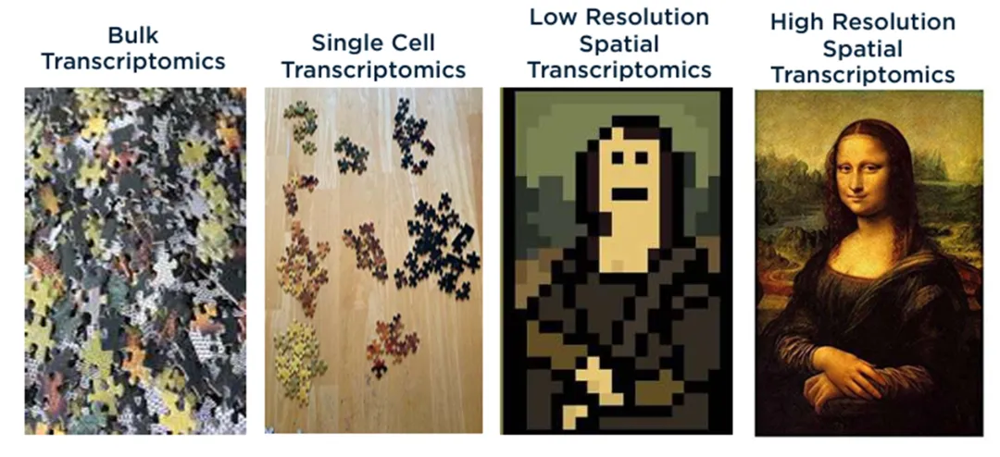
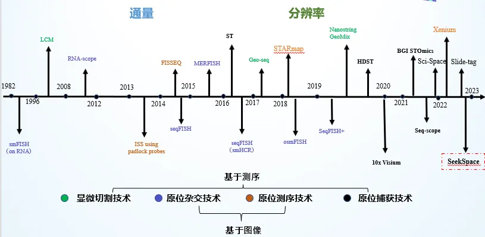
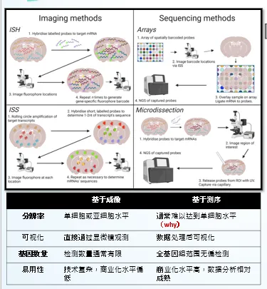
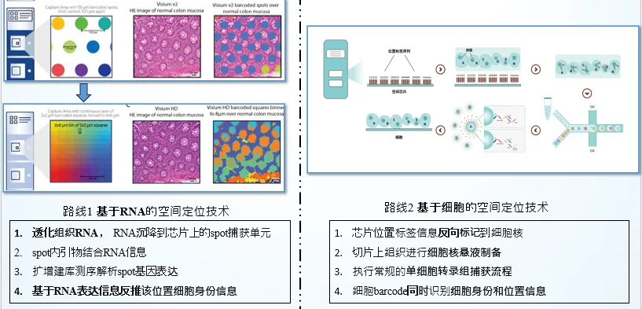
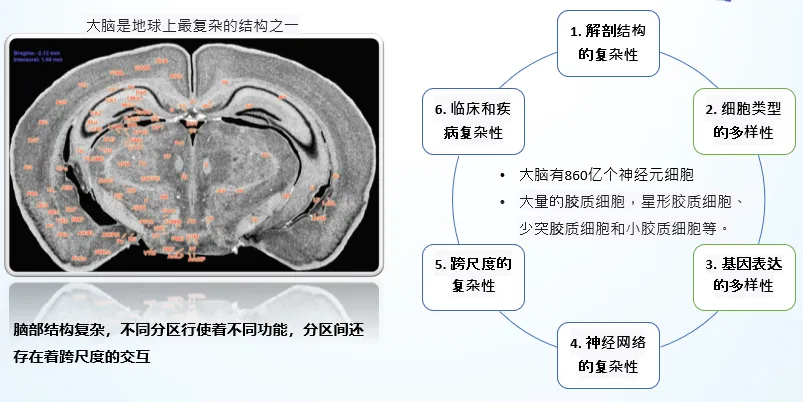
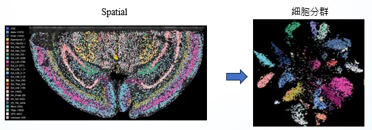
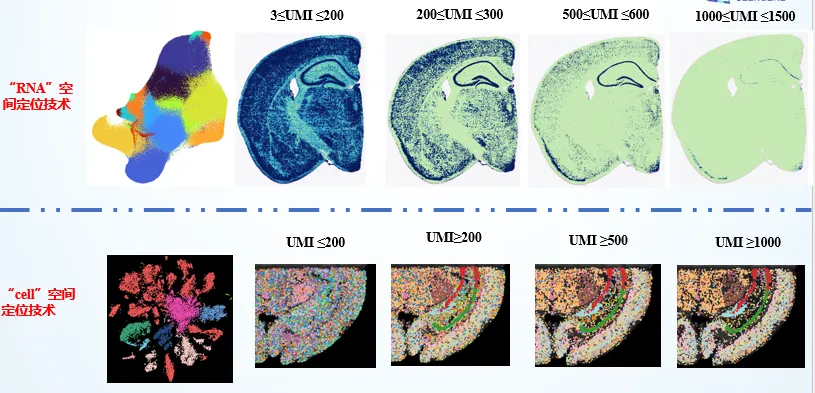
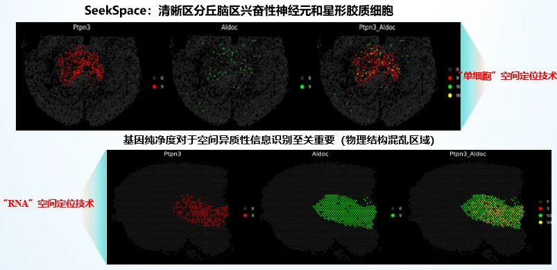
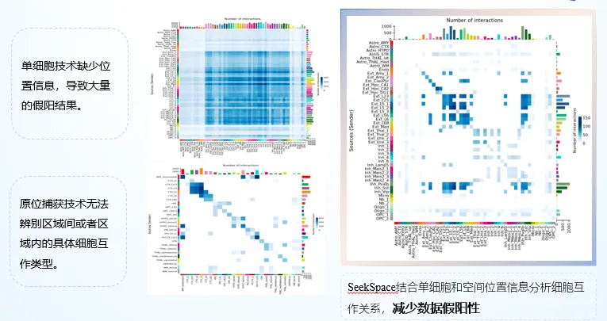
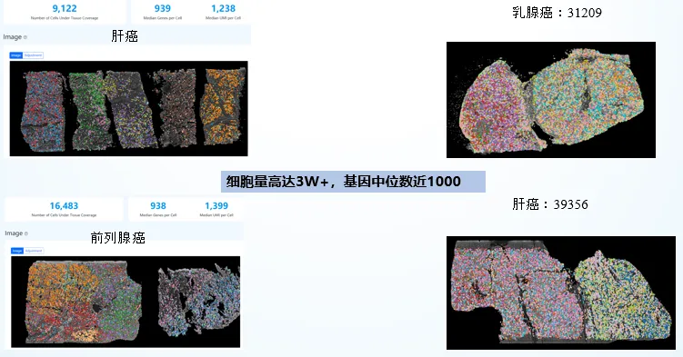

单细胞空间转录组在脑科学领域的应用
原文：https://mp.weixin.qq.com/s?__biz=MzAwMzIzOTk5OQ==&mid=2247520599&idx=1&sn=f5de77dfcb186b29ff0f0657ea680baf&chksm=9b3ce807ac4b61119cff06d6dc1517e05e6296b2039d8a150121964eb134d30259e5f9e965ff#rd 合集：单细胞教程全收录 / 空间转录组
一、写在前面
细胞是生物体(除病毒外)的基本结构和功能单位。不同类型的细胞集合在一起形成组织，多个组织组成器官，而多个器官又构成完整的生物体。例如，肌肉细胞组成肌肉组织，神经细胞组成神经组织。这种结构层级保证了生物体的完整性和功能多样性。所以，对于生物医药领域的研究者而言，人类只有一种疾病：细胞故障 。因此，现在的各类生物信息学的研究都在抢占研究"细胞图谱 "的高地。更多空间转录组资料与技术支持，可扫码获取~
二、空间转录组研究现状
1、单细胞→空间转录组 早期的高通量测序受到时代瓶颈的限制大多在组织匀浆 水平的分辨率完成，但我们显然不应该忽视组织中异种细胞在结构、功能、代谢、生命周期等方面的差异。近年来单细胞多组学的火热也正是因为解决了以上的问题。当然，世界上并没有完美的技术。单细胞虽然解决了细胞异质性 的问题，但在单细胞悬液的解离制备过程 中丢失了位置信息 。大家知道，人类之所以能够从受精卵发育为胚胎直至完整的个体，少不了位置信息引起的细胞分化。位置信息的丢失让单细胞转录组学提供的价值大打折扣，在这一背景下**，空间转录组学** 走上了历史的舞台(详细介绍可以参考：《Nature》经典综述：空间转录组学探索组织结构)。空转的现状(图2)是：image-base的空转技术在卷通量，sequence-base的空转在卷分辨率(图3，但显然它们都做不到，确实是越没有的越想要)。

图1(来自于互联网)
图2 空转技术发展史
2、空转的痛点：
从图3我们可以发现，imaging-base的空转检测通量有限 ，基本无法在全基因组水平捕获基因表达量，往往需要结合 同组织类型的单细胞数据 对矩阵进行插补(一文搞定空间转录组与单细胞测序的整合分析)。但是，再好的算法，能比真真切切检出的信号 还准确吗？sequencing-base的空转受限于spot的分辨率，分辨率过于粗糙，会导致一个spot中包含数个甚至数十个细胞；分辨率过于精细，会导致亚细胞水平的spot需要通过分bin或cell segmentation再合并为细胞单位 。同样地，再好的细胞划分算法 ，能比得上真实的细胞膜吗？此外，实际的透化建库过程中两类技术平台还需要面对共同的问题——RNA扩散。

图3 imaging-base vs. sequencing-base
3、单细胞空间转录组
那么问题来了，现在有没有真正的单细胞分辨率的空转平台 呢，当然有的：SeekSpace| 会单细胞就会空间转录组。区别于上面这些基于RNA的空转技术，SeekSpace是一个基于"细胞"的空转平台：通过将芯片位置标签反向标记 到细胞核的操作，能够成功让核RNA带上空间位置标签(5.5 x 15mm的芯片上包含约3000万种标签簇，每个标签簇的直径为900nm，标签簇中心点的距离为1.5μm，基本可以达到亚细胞水平)。此后再进行细胞核的单细胞文库构建，自然而然就获得了"单细胞空间"转录组数据。

图4 SeekSpace技术路线
三、空转 &脑科学
回到我们的主题，大脑作为地球上最复杂的结构之一，其复杂性 体现在解剖结构、细胞类型、基因表达、神经网络、信息处理、跨尺度以及临床和疾病等多个层面(图5)。理解大脑的复杂性需要结合多种研究技术 和跨学科的合作，如空间转录组技术、单细胞RNA测序、功能成像、电生理记录和基因编辑等。将脑科学与"单细胞空转"相结合不仅有助于揭示大脑的基本工作原理，还为脑部疾病的诊断和治疗提供了新的思路和方法。

图5
1、SeekSpace能够更准确的识别细胞身份
在SeekSpace的实例数据中，可以做到在无单细胞转录组 数据辅助(这真的会较少很多的分析成本)的情况下直接基于每个细胞的位置标签，溯源reads的空间定位信息。由于SeekSpace已经是"单细胞"水平的空转，其在空间上能对不同组织的细胞进行精准定位(有助于特定脑区边界、特殊细胞类型与标志物检测、细胞近距离互作方面的研究)，同时也能够提供丰度足够 的转录本信息(UMI中位数约1500)完成降维、分群操作。事实上，基于RNA的的空转平台由于RNA扩散效应、细胞划分不清晰，往往需要更多的UMI才能够完成对细胞身份的确定(图7)。

图6

图7
2、SeekSpace有助于识别稀有细胞类型
可能这么说还是有些抽象，例如在下面这个实例中，基于"cell"的SeekSpace能够比基于"RNA"的空间定位技术能够更清晰 地区分丘脑区兴奋性神经元和星形胶质细胞地定位。这意味着SeekSpace能够完善组织内的细胞类型种类，有助于发现组织中的稀有细胞类型 。从研究思路上，可以从"脑疾病风险基因突变、调控机制"、"神经元信号交互与传递异常"、"神经胶质细胞功能与变化"、"脑肿瘤机制和标志物发现"、"脑损伤与修复机制"。

图8
3、Seekspace有助于发现更精准的细胞互作
上面我们说过，单细胞技术的致命缺点 便是解离时丢失了空间信息 。在没有细胞之间互相位置的情况下，细胞通讯预测的结果显然可信度较低。空间转录组学保留了细胞在组织中的空间位置，这对理解细胞通讯至关重要。细胞之间的通讯通常依赖于其在组织中的相对位置 ，因为邻近的细胞更有可能通过直接接触 或旁分泌 交流，而远端的细胞更有可能通过内分泌 进行信息交流。单细胞转录组学虽然能够解析每个细胞的基因表达，但通常会丢失这些细胞的空间位置信息，这使得预测、理解哪些细胞可能在生理或病理过程中相互作用变得更加困难。而空间转录组可以通过设置细胞间距离的阈值 来过滤细胞通讯通路(空间转录组学习手册合辑)。细胞的微环境（包括邻近细胞类型、基质成分和局部化学环境）对细胞行为和通讯有重要影响。空间转录组学可以提供关于细胞及其周围微环境的全面视图，从而更好地捕捉细胞间相互作用的背景(尤其是多种细胞类型参与的细胞通讯)。相比之下，单细胞转录组学由于缺乏空间信息，难以考虑这些复杂的微环境 因素。在单细胞转录组学中，组织通常需要经过酶解或机械分离 以获取单个细胞，这个过程可能导致细胞表面受体或分泌因子的RNA损失，从而影响对细胞通讯的研究。相比之下，空间转录组学保留了组织的完整性 ，透化过程也更加的可控、均一减少了样本制备过程中可能对细胞通讯相关分子的破坏。因此相较于单细胞转录组，空间转录组的细胞互作结果往往包含更少的假阳性结果 ，也能够预测到更多的细胞互作关系 。因此，SeekSpace这类空转平台更有利于发现更精准的细胞互作。

图9
四、不仅仅是脑科学
不仅在脑科学中，SeekSpace在肝癌、乳腺癌、前列腺癌、肝癌等组织/疾病中也具有不俗的测试数据(图10)。在各类疾病研究过程中，Seekspace能够在组织切片中精确定位病变区域的基因表达变化，提供疾病的分子图谱，为理解发病机制与更新诊疗手段提供理论依据。在药理研究方面，详细的空间基因表达图谱为了也有希望辅助临床医生进行治疗检测、药物有效性评估或耐药机制研究等工作。

图10
更多空间转录组资料与技术支持，可扫码获取~

如何联系我们

 公众号后台消息回复不便，这里给大家留一下领取资料及免费服务器(足够支持你完成硕博生涯的生信环境)的微信号 ，方便各位随时交流、提建议（别问在么，添加时直接说来意）。此外呼声一直很高的交流群 也建好了，欢迎大家入群讨论：
公众号后台消息回复不便，这里给大家留一下领取资料及免费服务器(足够支持你完成硕博生涯的生信环境)的微信号 ，方便各位随时交流、提建议（别问在么，添加时直接说来意）。此外呼声一直很高的交流群 也建好了，欢迎大家入群讨论：
大家可以阅读完这几篇之后添加给生信入门初学者的小贴士 如何搜索公众号过往发布内容

 您点的每个赞和在看，我都认真当成了喜欢
您点的每个赞和在看，我都认真当成了喜欢